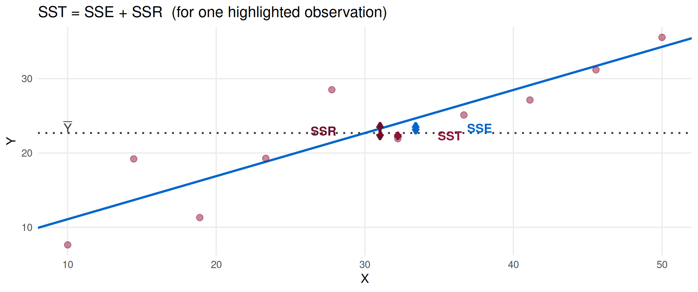
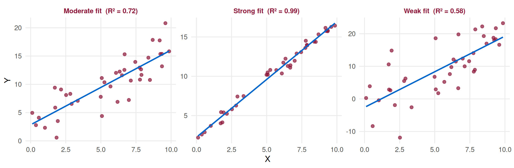

The Linear Regression Model
Part II — Goodness of Fit, OLS Properties & Multiple Regression
Goodness of Fit
Lecture Overview
Lecture 9 — Goodness of Fit, OLS Properties & Multiple Regression
- How well does the fitted line describe the data? — the variance decomposition
- The coefficient of determination \(R^2\)
- The correlation coefficient \(r\) and its link to \(R^2\)
- Why OLS is a good estimator — the Gauss–Markov theorem (BLUE)
- What goes wrong when we omit a relevant variable — Omitted Variable Bias
- Extending to Multiple Linear Regression (MLR)
- Interpreting MLR coefficients
- Adjusted \(R^2\)
Note
Reference: Newbold Ch. 11.4–11.5 (SLR fit), Ch. 12.1–12.3 (MLR).
The Variance Decomposition
Decomposing Total Variation
For each observation \(i\), we can write:
\[Y_i - \bar{Y} = \underbrace{(\hat{Y}_i - \bar{Y})}_{\text{explained by regression}} + \underbrace{(Y_i - \hat{Y}_i)}_{\text{residual}}\]
. . .
Squaring and summing over all observations:
\[\underbrace{\sum(Y_i - \bar{Y})^2}_{\text{SST}} = \underbrace{\sum(\hat{Y}_i - \bar{Y})^2}_{\text{SSE}} + \underbrace{\sum(Y_i - \hat{Y}_i)^2}_{\text{SSR}}\]
. . .
| Term | Name | Meaning |
|---|---|---|
| SST | Total Sum of Squares | Total variation in \(Y\) |
| SSE | Explained Sum of Squares | Variation explained by \(X\) |
| SSR | Residual Sum of Squares | Variation not explained by \(X\) |
Visualising the Decomposition
The Coefficient of Determination \(R^2\)
Definition of \(R^2\)
The coefficient of determination measures the proportion of total variation in \(Y\) explained by the regression:
\[\boxed{R^2 = \frac{\text{SSE}}{\text{SST}} = 1 - \frac{\text{SSR}}{\text{SST}}}\]
. . .
Key properties:
- \(0 \leq R^2 \leq 1\)
- \(R^2 = 0\): \(X\) explains nothing
- \(R^2 = 1\): perfect fit (all points on the line)
- \(R^2\) is unit-free
Interpretation:
“The model explains \(R^2 \times 100\%\) of the total variation in \(Y\).”
An \(R^2\) of 0.82 means 82% of the variation in \(Y\) is explained by \(X\) via the estimated model.
\(R^2\): Examples Across Different Fits

Caution: \(R^2\) Has Limits
- A high \(R^2\) does not mean the model is correctly specified — it could be driven by a single outlier, or by a spurious correlation.
- A low \(R^2\) does not mean the regression is useless — in many economic applications, \(R^2 = 0.3\) is perfectly reasonable.
- Adding more regressors always increases \(R^2\) — even if those variables are irrelevant. This is why MLR uses Adjusted \(R^2\) instead (covered shortly).
- \(R^2\) does not measure causality. Two unrelated trending variables can produce \(R^2 \approx 1\) (spurious regression).
. . .
Important
Use \(R^2\) as one indicator of fit — always combine it with the scatter diagram, residual plots, and hypothesis tests.
The Correlation Coefficient \(r\)
In SLR, the sample Pearson correlation coefficient is:
\[r = \frac{\displaystyle\sum(X_i - \bar{X})(Y_i - \bar{Y})}{\sqrt{\displaystyle\sum(X_i-\bar{X})^2 \cdot \sum(Y_i-\bar{Y})^2}} = \frac{S_{XY}}{\sqrt{S_{XX} \cdot S_{YY}}}\]
. . .
Properties:
- \(-1 \leq r \leq 1\)
- Sign of \(r\) = sign of \(\hat{\beta}_1\)
- \(r = 0\): no linear association
- \(|r| = 1\): perfect linear fit
Link to \(R^2\):
In SLR (one regressor): \[R^2 = r^2\]
The coefficient of determination equals the square of the correlation coefficient.
. . .
Note
Correlation \(\neq\) causation. A high \(|r|\) tells us the variables move together linearly — nothing more.
\(R^2\) and \(r\) in R
Continuing with our running example:
# R-squared
summary(model)$r.squared[1] 0.5416654# Correlation coefficient
cor(revenue, profit)[1] 0.7359792# Verify: r² = R²
cor(revenue, profit)^2[1] 0.5416654. . .
Interpretation: the model explains 54.2% of the total variation in operating profit. The correlation between revenue and profit is \(r = 0.736\) — a strong positive linear association.
Why Trust OLS?
The Gauss–Markov Theorem
Important
Gauss–Markov Theorem:
Under assumptions A1–A5, the OLS estimators \(\hat{\beta}_0\) and \(\hat{\beta}_1\) are BLUE:
- Best: minimum variance among all linear unbiased estimators
- Linear: linear functions of \(Y_1, \ldots, Y_n\)
- Unbiased: \(E[\hat{\beta}_j] = \beta_j\) for \(j = 0, 1\)
- Estimator
. . .
Unbiasedness means: if we repeated our sample many times, the average of the \(\hat{\beta}_j\) values would equal the true \(\beta_j\).
Minimum variance means: no other linear unbiased estimator can be more precise than OLS.
Unbiasedness of OLS
We can show that, under A1–A5:
\[E[\hat{\beta}_1] = \beta_1, \qquad E[\hat{\beta}_0] = \beta_0\]
The intuition: OLS residuals are constructed to be uncorrelated with \(X\) (by the first-order conditions), so the error term \(\varepsilon_i\) does not “leak” into the estimates on average.
. . .
Variance of the slope estimator:
\[\text{Var}(\hat{\beta}_1) = \frac{\sigma^2}{S_{XX}} = \frac{\sigma^2}{\displaystyle\sum(X_i-\bar{X})^2}\]
Note
The larger \(S_{XX}\) (more spread in \(X\)), the smaller the variance of \(\hat{\beta}_1\) — more variation in \(X\) helps us pin down the slope more precisely.
Omitted Variable Bias
What Happens When We Omit a Variable?
Suppose the true model is:
\[Y_i = \beta_0 + \beta_1 X_{1i} + \beta_2 X_{2i} + \varepsilon_i\]
But we estimate only:
\[Y_i = \alpha_0 + \alpha_1 X_{1i} + u_i \qquad \text{(misspecified model)}\]
. . .
What is \(E[\hat{\alpha}_1]\)? One can show:
\[E[\hat{\alpha}_1] = \beta_1 + \beta_2 \cdot \frac{S_{X_1 X_2}}{S_{X_1 X_1}}\]
. . .
Important
Omitted Variable Bias (OVB):
\[\text{Bias} = E[\hat{\alpha}_1] - \beta_1 = \beta_2 \cdot \frac{S_{X_1 X_2}}{S_{X_1 X_1}}\]
OLS is biased and inconsistent whenever \(\beta_2 \neq 0\) and \(X_1\) and \(X_2\) are correlated.
OVB: When Is It a Problem?
The bias is non-zero only when both conditions hold:
Condition 1: \(\beta_2 \neq 0\)
The omitted variable \(X_2\) actually affects \(Y\).
(If it doesn’t matter, leaving it out is harmless.)
Condition 2: \(S_{X_1 X_2} \neq 0\)
The omitted variable \(X_2\) is correlated with the included \(X_1\).
(If they are uncorrelated, OLS for \(\beta_1\) is still unbiased.)
. . .
Direction of bias: \(\text{sign}(\text{Bias}) = \text{sign}(\beta_2) \times \text{sign}(r_{X_1 X_2})\)
| \(\beta_2\) | \(\text{Corr}(X_1, X_2)\) | Bias direction |
|---|---|---|
| \(+\) | \(+\) | Upward (overestimate \(\beta_1\)) |
| \(+\) | \(-\) | Downward |
| \(-\) | \(+\) | Downward |
| \(-\) | \(-\) | Upward |
OVB: A Motivating Example
Hypothetical scenario: We want to estimate the effect of advertising spend \(X_1\) on sales \(Y\).
The true model includes firm size \(X_2\) (larger firms spend more and sell more).
set.seed(7)
n <- 100
size <- rnorm(n, 50, 10) # firm size (omitted variable)
adspend <- 5 + 0.4*size + rnorm(n, 0, 5) # corr. with size
sales <- 20 + 2*adspend + 3*size + rnorm(n, 0, 10) # true: β1=2, β2=3
# Short regression (omitting size)
coef(lm(sales ~ adspend))["adspend"] adspend
5.099163 # Long regression (including size)
coef(lm(sales ~ adspend + size))["adspend"] adspend
2.313567 . . .
The short regression overestimates the true effect of advertising (\(\beta_1 = 2\)) because it absorbs the positive effect of firm size. This is why we need MLR.
Multiple Linear Regression
The MLR Model
The Multiple Linear Regression (MLR) model with \(k\) regressors:
\[\boxed{Y_i = \beta_0 + \beta_1 X_{1i} + \beta_2 X_{2i} + \cdots + \beta_k X_{ki} + \varepsilon_i}\]
. . .
| Symbol | Meaning |
|---|---|
| \(\beta_0\) | Intercept — mean of \(Y\) when all \(X_j = 0\) |
| \(\beta_j\) | Partial slope — change in mean \(Y\) per unit increase in \(X_j\), holding all other regressors constant (ceteris paribus) |
| \(\varepsilon_i\) | Error term — same assumptions as SLR |
. . .
Note
The key word in MLR is ceteris paribus (“all else equal”). \(\hat{\beta}_j\) measures the effect of \(X_j\) after controlling for all other included variables.
OLS in MLR
OLS still minimises \(\text{SSR} = \sum e_i^2\), but now in \(k+1\) dimensions.
The normal equations become a system of \(k+1\) linear equations — solved efficiently in matrix form:
\[\hat{\boldsymbol{\beta}} = (\mathbf{X}'\mathbf{X})^{-1}\mathbf{X}'\mathbf{y}\]
Note
You do not need to solve this by hand. In R, lm(Y ~ X1 + X2 + ... + Xk) handles everything. The interpretation principles are the same as SLR — only the ceteris paribus qualifier changes.
. . .
The Gauss–Markov theorem extends to MLR: under A1–A5 (appropriately generalised), OLS is still BLUE.
MLR: Interpreting Coefficients
Hypothetical example: Explain operating profit (\(Y\)) using both sales revenue (\(X_1\)) and number of employees (\(X_2\)).
set.seed(5)
n <- 30
revenue2 <- round(runif(n, 100, 500), 0)
employees <- round(runif(n, 10, 80), 0)
profit2 <- round(5 + 0.15*revenue2 + 0.8*employees + rnorm(n, 0, 12), 1)
mlr_model <- lm(profit2 ~ revenue2 + employees)
coef(mlr_model)(Intercept) revenue2 employees
21.4612459 0.1290236 0.6126250 . . .
Interpretation:
- \(\hat{\beta}_1 = 0.129\): one additional m.u. of revenue is associated with 0.129 m.u. more profit, holding number of employees constant.
- \(\hat{\beta}_2 = 0.613\): one additional employee is associated with 0.613 m.u. more profit, holding revenue constant.
MLR: Full Summary
summary(mlr_model)
Call:
lm(formula = profit2 ~ revenue2 + employees)
Residuals:
Min 1Q Median 3Q Max
-21.8947 -9.0708 -0.1219 6.0029 25.3186
Coefficients:
Estimate Std. Error t value Pr(>|t|)
(Intercept) 21.46125 9.51476 2.256 0.0324 *
revenue2 0.12902 0.02048 6.299 9.66e-07 ***
employees 0.61262 0.11789 5.196 1.80e-05 ***
---
Signif. codes: 0 '***' 0.001 '**' 0.01 '*' 0.05 '.' 0.1 ' ' 1
Residual standard error: 12.43 on 27 degrees of freedom
Multiple R-squared: 0.6543, Adjusted R-squared: 0.6287
F-statistic: 25.55 on 2 and 27 DF, p-value: 5.923e-07Adjusted \(R^2\)
Why Regular \(R^2\) Is Not Enough in MLR
In MLR, adding any variable — even a completely irrelevant one — will weakly increase \(R^2\):
\[R^2 = 1 - \frac{\text{SSR}}{\text{SST}} \quad \Rightarrow \quad R^2 \text{ can only increase as we add regressors}\]
. . .
This makes \(R^2\) unreliable for comparing models with different numbers of regressors.
. . .
Note
Quick demonstration:
set.seed(9)
noise <- rnorm(30) # completely irrelevant variable
m1 <- lm(profit2 ~ revenue2 + employees)
m2 <- lm(profit2 ~ revenue2 + employees + noise)
c(R2_without_noise = summary(m1)$r.squared,
R2_with_noise = summary(m2)$r.squared)R2_without_noise R2_with_noise
0.6542932 0.6544614 Adjusted \(R^2\)
The adjusted \(R^2\) penalises for the number of regressors \(k\):
\[\boxed{\bar{R}^2 = 1 - \frac{\text{SSR}/(n-k-1)}{\text{SST}/(n-1)} = 1 - (1-R^2)\frac{n-1}{n-k-1}}\]
. . .
Properties:
- \(\bar{R}^2 \leq R^2\) always
- \(\bar{R}^2\) can decrease when an irrelevant variable is added
- \(\bar{R}^2\) can be negative (very poor fit)
Use \(\bar{R}^2\) when:
- Comparing models with different numbers of regressors
- Deciding whether adding a new variable improves the model
Adjusted \(R^2\): Demo
set.seed(9)
noise <- rnorm(30)
m1 <- lm(profit2 ~ revenue2 + employees)
m2 <- lm(profit2 ~ revenue2 + employees + noise)
c(Adj_R2_without = summary(m1)$adj.r.squared,
Adj_R2_with = summary(m2)$adj.r.squared)Adj_R2_without Adj_R2_with
0.6286853 0.6145915 . . .
Adding the irrelevant noise variable increases plain \(R^2\) but decreases \(\bar{R}^2\) — correctly signalling that the additional variable does not improve the model.
Lecture Summary
Key Takeaways — Lecture 9
- SST = SSE + SSR: total variation = explained + unexplained.
- \(R^2 = \text{SSE}/\text{SST}\): proportion of variation explained by the model. In SLR, \(R^2 = r^2\).
- The Gauss–Markov theorem guarantees OLS is BLUE under A1–A5.
- OVB arises when a relevant variable is omitted and it is correlated with included regressors — OLS becomes biased and inconsistent.
- MLR includes multiple regressors. Each \(\hat{\beta}_j\) is a partial effect — the effect of \(X_j\) holding all other variables constant.
- Adjusted \(R^2\) penalises for extra regressors — use it to compare models of different sizes.
Looking Ahead
Lecture 10 — Part III: Statistical Inference & Model Validation
- Are the estimated coefficients statistically different from zero? — \(t\)-tests
- Is the model as a whole significant? — the \(F\)-test (ANOVA table)
- Confidence intervals for \(\beta_j\)
- Checking the classical assumptions — residual diagnostics
- Normality, homoscedasticity, autocorrelation, and multicollinearity
Note
Reference: Newbold Ch. 11.6–11.8 (inference), Ch. 12.4–12.6 (MLR inference and diagnostics).